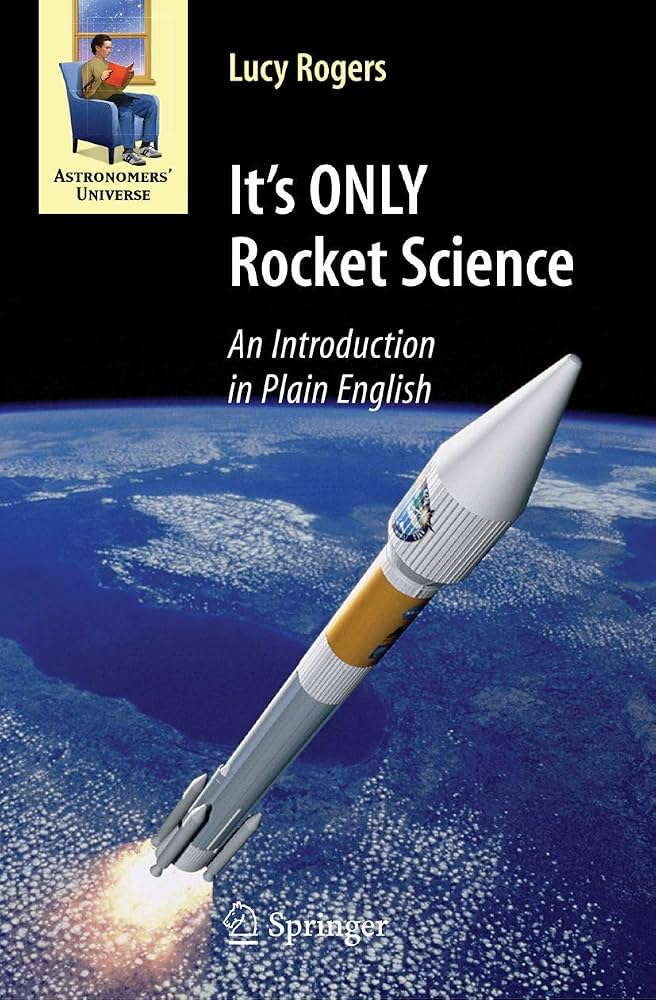

It's ONLY Rocket Science
An accessible introduction to the systems, engineering, and principles involved in putting spacecraft into space.

The online guide to satellite security, space systems, and Hack-A-Sat.
Books I have found useful for understanding space systems, orbital mechanics, spacecraft engineering, and related subjects.

An accessible introduction to the systems, engineering, and principles involved in putting spacecraft into space.